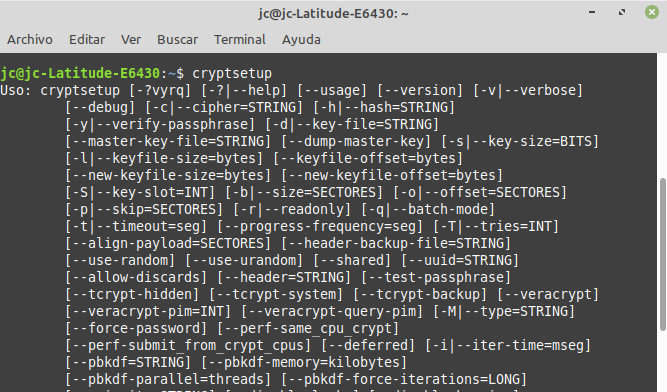

6.2.3 LUKS (Linux)
1. Introducción a LUKS
Luks es una especificación de cifrado de disco creado por Clemens Fruhwirth, originalmente destinado para Linux.
Las distribuciones actuales de Linux utilizan el cifrado de dispositivo de bloques. Este cifrado opera por debajo del sistema de archivos asegurando que todo lo presente en un dispositivo de bloques (disco completo, partición o fichero actuando como dispositivo loop) sea cifrado, solo siendo posible acceder a su contenido cuando el dispositivo se ha montado.
LUKS se puede utilizar directamente sobre un dispositivo (también sobre una partición o sobre un contenedor de bloques –dispositivo loop– para dispositivos externos o sistemas en lo que no se incluya la raíz del sistema) o combinarse con gestores de volúmenes o de discos como LVM o Linux MD. Por ejemplo, la instalación por defecto de un sistema Ubuntu (tanto Server como Desktop) configura el escenario LVM sobre LUKS dejando la partición /boot sin cifrar.
Otro escenario interesante es la utilización de sistemas de archivos avanzados como Btrfs sobre LUKS. El sistema de archivos Btrfs ofrece, entre otras, las siguientes características:
- Instantáneas de disco (snapshots) tanto de lectura y escritura como de solo lectura, haciendo uso de la característica copy-on-write tanto de los datos como de los metadatos.
- Utilización de subvolúmenes.
- Soporte integrado para RAID de niveles RAID-0, RAID-1 y RAID-10.
- Cambio de tamaño y desfragmentación del sistema de archivos en línea.
- Compresión del sistema de archivos.
- Deduplicación del sistema de archivos.
- Altas tasas de rendimiento en dispositivos de estado sólido (SSD).
- Tratamiento eficiente de los ficheros de tamaño pequeño.
También soporta los niveles RAID de paridad distribuida (niveles RAID-5 y RAID-6) aunque de forma experimental. Por este motivo, en entornos empresariales se recomienda para ciertos escenarios la utilización del sistema de archivos ZFS, que a su vez incorpora cifrado de datos de forma nativa. ZFS se puede utilizar de forma independiente o combinado con LUKS para sortear algunas de las limitaciones que presenta el cifrado nativo en ZFS.
2. Instalación de LUKS
LUKS se instala sobre la utilidad cryptsetup, que también es capaz de utilizar otros métodos de cifrado como el dm-crypt, loop-AES o TrueCrypt.
3. Ventajas de usar LUKS
LUKS es actualmente el estándar que se utiliza para el cifrado de discos, particiones y archivos en sistemas operativos Linux, por tanto, es recomendable hacer uso de LUKS frente a otras herramientas que no son estándar, porque LUKS siempre se tendrá instalado (cryptsetup) en cualquier sistema operativo basado en Linux, sin necesidad de instalar ningún software adicional.

Como otras ventajas decir que, LUKS almacena toda la información en la cabecera de la partición, por lo que facilita la migración de particiones a otros discos o sistemas y también nos permite cifrar particiones swap.
4. Referencias
- LUKS, repositorio oficial en GitLab.
- Cifrado completo del sistema. Escenarios de uso, documentación oficial de ArchLinux.
- https://mutschler.eu/linux/install-guides/ubuntu-btrfs-20-04/
- Full Disk Encryption Howto 2019, en la documentación de la comunidad de Ubuntu.
- How to install LUKS encrypted Ubuntu 18.04.x Server and enable remote unlocking
Obra publicada con Licencia Creative Commons Reconocimiento No comercial Compartir igual 4.0